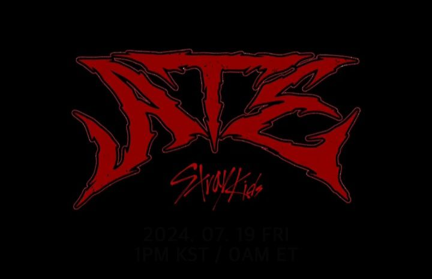
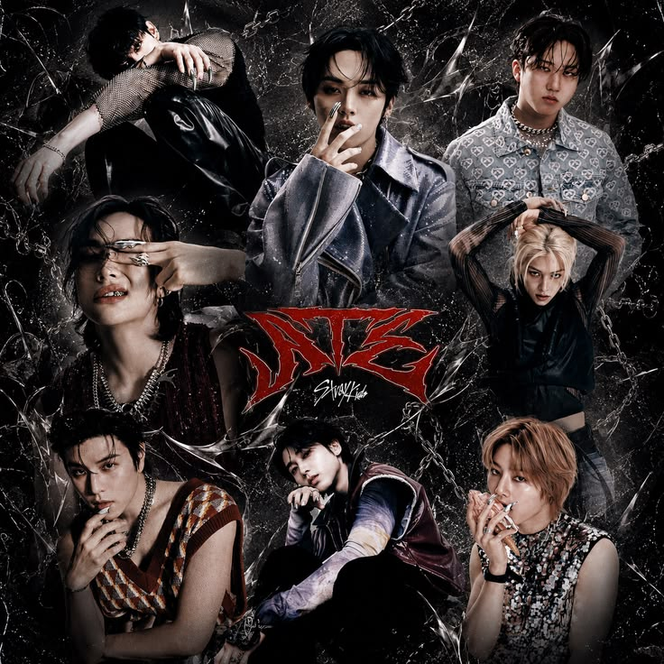

|
 |
El 19 de julio de 2024, Stray Kids regresó con su noveno mini álbum ATE, marcando su primer
comeback del año. El sencillo principal, "Chk Chk Boom", llegó acompañado de un concepto
lleno de color, máquinas expendedoras y galletas de la fortuna, simbolizando la idea de la
buena suerte y la confianza en sí mismos.
Antes del lanzamiento, el grupo encabezó festivales internacionales como I-Days Milano y BST Hyde Park. ATE debutó en el número uno del Billboard 200 y dio inicio a su gira mundial "dominATE", reafirmando su dominio dentro y fuera de Corea. |
| Periodo | Junio - Agosto 2024 |
| Álbum | ATE - 19 de julio de 2024 |
| Sencillo principal | "Chk Chk Boom" |
| Logro destacado | Debut #1 en Billboard 200 e inicio de la gira mundial "dominATE" |
